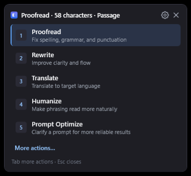

System-wide capture
Reads the focused field through UI Automation, Scintilla WM_COPY messages, or a clipboard probe — with per-app rules that remember what worked.
Select text anywhere, press Ctrl+Alt+E, and choose an action. Zero background scanning. Your text goes straight to your own OpenAI-compatible provider or local Ollama server.

A native shell reads the focused field, a local Rust engine does the work, and the result is written back where you were typing. Nothing runs between requests.
Reads the focused field through UI Automation, Scintilla WM_COPY messages, or a clipboard probe — with per-app rules that remember what worked.
No keylogging, no idle polling, no suggestions appearing while you type. Work starts when the hotkey arrives and stops when the answer is written back.
zero background scanningOne word, a passage, an empty caret, or read-only text each get the actions that make sense. Emendly never pastes into a field that cannot take text.
4 selection statesAny OpenAI-compatible endpoint — hosted, an Anthropic-compatible proxy, local Ollama or LM Studio. Your key stays in the environment or the OS keychain.
BYOK · no Emendly service in the pathActions are also reachable with the number keys, and Tab expands the full grouped list with a filter box.
| Action | What it does | Needs |
|---|---|---|
| Proofread | Spelling, grammar and punctuation. | a selection |
| Rewrite | Clearer wording, with an optional surrounding-context toggle. | a selection |
| Humanize | Makes model-flavoured prose read naturally. | a selection |
| Prompt Optimize | Turns a rough prompt into a precise one. | a selection |
| Translate | Into the target language, chosen from a dropdown or typed freehand. | a selection |
| Synonyms / Antonyms | Up to five concise alternatives. | a single word |
| Compose | Drafts new text from a brief, optionally using the surrounding sentences. | an empty caret |
| Custom Prompt | Free-text instruction against the current field. | anywhere |
| What Emendly sees | What you get |
|---|---|
| Empty caret | Compose, Custom Prompt |
| One word selected | Proofread, Translate, Synonyms |
| A sentence or passage | Proofread, Rewrite, Translate, Humanize, Prompt Optimize |
| Read-only text | The same menu, except results can only be copied, not inserted |
| Capture strategy | Used for |
|---|---|
| UI Automation | Accessible Win32 and Chromium surfaces — Chrome, Edge, most native apps |
| Scintilla messages | WM_COPY where the control answers it — Notepad3, Notepad++ |
| Clipboard probe | Surfaces that publish nothing to UIA — VS Code, WebView2 apps, terminals |
MIT licensed, no account, no telemetry, bring your own key.
Emendly makes one network request: the one you asked for, from your machine to the base_url you configured. There is no Emendly account and no Emendly server in the path.
EMENDLY_API_KEY or the OS keychain.No, and nothing is being sold. Emendly is free and MIT licensed; it is bring-your-own-key, and that keeps your text away from any billing service of ours.
Point Emendly at your own OpenAI-compatible endpoint with your own key, or at a local Ollama or LM Studio server for no per-token cost at all.
No. There is no paid tier, no licence key and no trial clock. Every feature ships in the same MIT build with nothing to activate.
If Emendly saves you time, you can sponsor the work on GitHub — it pays for signing and hosting, not features.
Never. There is no timer, no watcher and no keyboard hook in the engine. It is strictly on demand: nothing is read until you press the hotkey, and only from the field you were in.
Any Windows app with an accessible text field: browsers, Word and the rest of Office, Notepad3 and Notepad++, VS Code, terminals, and PDF viewers in read-only Copy mode.
Where an app hides its text from the accessibility tree, Emendly falls back to Scintilla messages or a clipboard probe, and remembers the working strategy for that executable.
Yes. Set the Base URL to http://localhost:11434/v1 for Ollama (or LM Studio's local server) and the model to whatever you have pulled. The engine speaks the OpenAI chat-completions format, streams the reply, and never touches the internet unless you point it there.
The Rust engine is platform-neutral and builds for Windows, macOS and Linux from the same source. A native Swift menu-bar shell lives in shell/macos/; the Windows shell is the one shipping today.